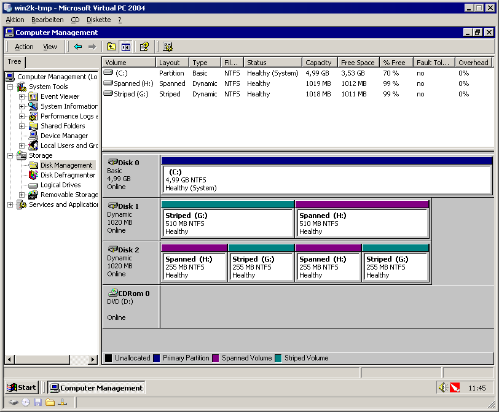
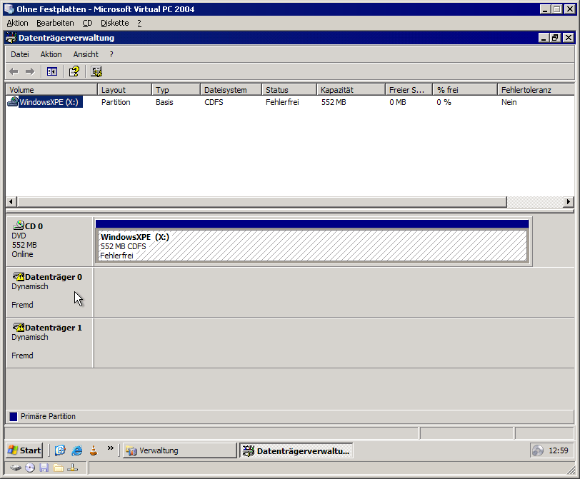
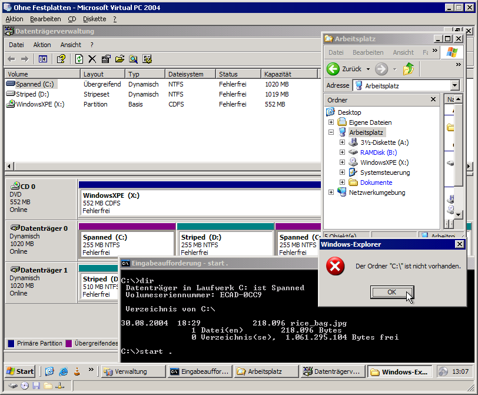
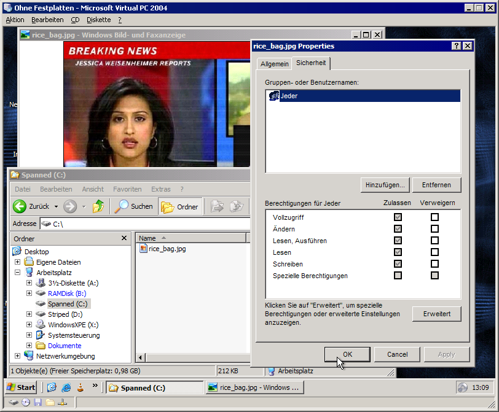

Zum Test dienten zwei virtuelle Festplatten für Virtual PC der Größe 1GB. Diese wurden unter Windows 2000 Professional als dynamische Datenträger formatiert und in je 2 Partitionen eingeteilt, eines als Striped Volume, das andere als Spanned Volume. Als kleine Gemeinheit wurden die Teile auf der 2. Festplatte jeweils in 2 nichtzusammenhängende Festplattenregionen geschrieben (sollte wegen des dynamischen Datenträgers kein Problem sein.
Die Konfiguration sieht jetzt so aus:

Auf jeder der Platten wurde dann eine einzige Datei (ein Bild) von 213 KB gespeichert. Für die fertigen Platten (.vhd, mit 7z komprimiert, 310 KB) wurden dann "differentielle Disks" erzeugt, damit jedes Tool die gleichen Startbedingungen hat. Diese differentiellen Disks wurden dann in einen neuen virtuellen PC eingebaut. Als kleine Gemeinheit hab ich die Platte 3 als Primary Master und die Platte 2 als Primary Slave eingebaut, also genau umgekehrt als unter Windows 2000. Ein virtuelles CD-Laufwerk (das auf das physikaliche CD-Laufwerk meines PCs zugreift) wurde auch noch eingebaut und als Startdatenträger konfiguriert.
Ich habe 2 BartPE-basierte Systeme und 1 Linux-basiertes Systeme getestet.
Wohl das bekannteste BartPE basierende System. Nach Aussage des Autors ist es für Diagnose- und Recovery-Aufgaben prädestiniert. Insbesondere ist eine Vielzahl von exotischen Festplatten- und Netzwerkkarten-Treibern dabei.
Dieses System erkannte die Platten out-of-the-box nicht. diskpart.exe (was im Startmenü unter den Konsolentools verlinkt ist) erkannte die Platten als "Fremd". Ein beherztes diskpart import löste das Problem - die Platten konnten ohne Probleme gelesen werden. Allerdings hab ich nicht getestet, ob sie nachher im Original-Win2000 noch funktioniert hätten.
Nicht zu verwechseln mit Microsofts Windows XPe (XP Embedded); Windows XPE ist ein BartPE-Plugin, das einen "echten Explorer" (inkl. Systemsteuerung etc.) unter BartPE zur Verfügung stellt. Das ist natürlich bequemer beim arbeiten (und auch DAU-kompatibler) als die BartPE-typische Kommandozeile, braucht aber auch ein Vielfaches länger zu starten. (die Zeit reichte locker, um die gesamte Website bis hierher zu schreiben...)
Auch dieses System erkannte die Platten out-of-the-box nicht. Hier gibt es aber die Datenträgeverwaltung in der Systemsteuerung:

Ein beherzter Rechtsklick auf "Fremd" gefolgt von "Fremde Datenträger importieren" löste auch hier das Problem. Laufwerksbuchstaben zuweisen war dann noch nötig, aber auch kein wirkliches Problem. Allerdings weigert sich der Explorer standhaft, die neuen Laufwerksbuchstaben zu benutzen. Die DOS-Box hat damit aber keine Probleme.
Ergebnis:

Aktiviert man in den Ordneroptionen, dass Ordnerfenster in eigenen Prozessen laufen sollen, dann klappts auch mit dem Explorer.
>

Fazit: Es geht, wenn man weiß wie... Die lange Bootzeit ist aber eher störend.
GRML ist eine Linux-Live-CD, die auf grafischen Schnickschnack zugunsten von mehr Konsolentools (und Tools für Blinde, wie Sprachausgabe) verzichtet. Man hat die Wahl zwischen Framebuffer oder nativer Konsole. Standardmäßig startet eine zsh in einem screen.
GRML (bzw. sein Kernel) stellt die Einzelteile des dynamischen Datenträgers als einzelne Partitionen dar. /dev/hda hat also 4 Partitionen, /dev/hdb derer zwei.
Und dabei ist dann auch schon Schluss. Es gibt zwar ne Beschreibung, wie man das per Device-Mapper hinbiegen kann, dafür hat aber anscheinend selbst GRML nicht genügend Tools (ldminfo fehlt beispielsweise).